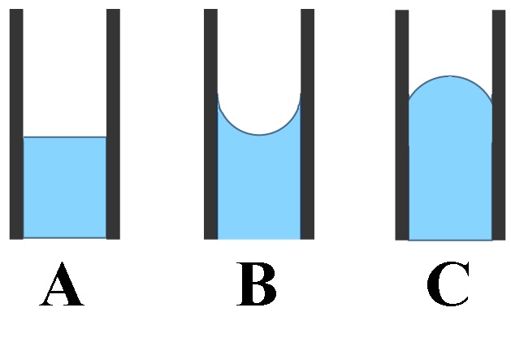

Press Ctrl-Z to toggle the answers & Ctrl-x to toggle the solutions.
Take-home quiz chapter 11
Mr. Alder
Jun 27, 2023
name: ______________________________________
1) Which of the following 3 alkane isomers would you expect to have the
lowest boiling point?

A) Pentane
B) Neopentane*
C) Isopentane
D) Since they are isomers, they will have the same boiling point.
Neopentane is the most branched alkane, so it will have the least surface area interacting for London dispersion forces. Thus it will have the lowest intermolecular forces and the lowest boiling point.
2) How much energy is required to vaporize 32.6 g of dichloromethane (CH2Cl2) (84.93 g/mol) at its boiling point, if its ΔHvap is 28.06 kJ/mol?
A) 10.8 kJ*
B) 98.7 kJ
C) 32.6 g x 1 mol/28.06g x kJ
D) 0.384 kJ
32.6 g x 1mol/84.93g x 28.06 kJ/mol = 10.8 kJ
3) Which of the following decreases the rate of vaporization?
A) Increasing the surface area
B) Strong intermolecular bonds*
C) Increasing temperature
D) Weak intermolecular bonds
Decreasing the surface area, strong intermolecular bonds, or decreasing the temperature will lead to an increased rate of vaporization.
4) Place the following substances in order of decreasing boiling point.
H2O N2 CO
A) CO > H2O > N2
B) CO > N2 > H2O
C) N2 > CO > H2O
D) H2O > CO > N2*
N2 only has London dispersion forces, so it has the lowest boiling point.
CO is polar, so it has dipole-dipole forces
H2O can hydrogen bond, so it will have the highest boiling point.
5) Using the phase diagram below, what phase transition would occur if H
2O was cooled from 60.°C to -75°C at 0.005 atm?

A) Deposition*
B) Sublimation
C) Freezing
D) Condensation
At 0.005 atm and 60.°C the water would be a gas, but at 0.005 atm and -75°C it would be a solid. So the phase transition is deposition.
6) In which of the following figures is the adhesive force less than the cohesive force?

A) The image labeled A
B) The image labeled B*
C) The image labeled C
D) None of the above.
When adhesive force is equal to the cohesive force the fluid will have the same attraction to the side of the tube as it does other molecules in the fluid, so it will cause the meniscus to be flat, thus image A is the answer.
7) Which of the following would you expect to have the lowest surface tension?
A) CH3CH2CH2CH2CH2CH2CH2CH3
B) CH3CH2CH2CH2CH2CH3
C) CH3CH2CH2CH2CH3*
D) CH3CH2CH2CH2CH2CH2CH3
The shortest carbon chain will have the smallest London dispersion forces, thus the lowest surface tension.
8) What is the main reason why the boiling point of NH3 is much higher than that of PH3?
A) NH3 has stronger London dispersion forces than PH3
B) PH3 can hydrogen bond whereas NH3 cannot
C) NH3 can hydrogen bond whereas PH3 cannot*
D) NH3 has dipole-dipole forces whereas PH3 does not
NH3 has a hydrogen attached to a N, O, or F, so it can hydrogen bond whereas PH3 does not, so it cannot hydrogen bone. Hydrogen bonding gives NH3 a higher boiling point.
9) Identify the place which has the lowest boiling point of water.
A) Denver, Colorado, 5280 feet
B) Mt. Everest, 29,035 feet*
C) Death Valley, 282 feet below sea level
D) New Orleans, sea level
The lowest boiling point will be where the atmospheric pressure is the lowest. Atmospheric pressure will be the lowest at the highest elevation.
10) Choose the substance with the lowest vapor pressure at a given temperature.
A) CH3OH*
B) N2
C) CO2
D) SeF2
The chemical with the highest intermolecular forces will have the lowest vapor pressure. Since CH3OH can hydrogen bond, it will have the highest intermolecular forces, and the lowest vapor pressure.
SeF2 is a polar molecule (dipole-dipole forces).
CO2 and N2 are nonpolar (only have London dispersion forces).
11) Which of the following has the highest viscosity?
A) CH3CH2CH2CH2OH*
B) CH4Cl2
C) Br2
D) C4H10
CH3CH2CH2CH2OH can hydrogen bond, which is the stronger than dipole-dipole forces, and London dispersion forces, so it will have the highest viscosity.
Br2 & C4H10 are nonpolar (only London dispersion forces).
CH4Cl2 is a little polar, so it has dipole-dipole forces.
12) How much energy is required to heat 37.0 g H2O from a liquid at 78.1°C to a gas at 110°C?
ΔHvap = 40.7 kJ/mol
Cliquid = 4.184 \( \frac{J}{g°C} \)
Cgas = 2.01 \( \frac{J}{g°C} \)
Csolid = 2.09 \( \frac{J}{g°C} \)
Tmelting = 0°C
Tboiling = 100°C
A) 4220 kJ
B) 1510 kJ
C) 87.7 kJ*
D) 104 kJ
To calculate the energy required to heat water from a liquid at 78.1°C to a gas at 110°C, we need to consider the following steps:
- Heating the liquid water from its initial temperature to its boiling point.
- Vaporizing the liquid water at its boiling point to gas.
- Heating the water vapor from it's boiling point to 110°C.
Step 1: Heating the liquid water First, we calculate the energy required to heat the liquid water from 78.1°C to its boiling point at 100°C.
q1 = m x Cliquid x ΔT1
where: q1 = energy required (in joules) m = mass of water (in grams)
Cliquid = specific heat capacity of liquid water (in J/g-°C)
ΔT1 = change in temperature (final temperature - initial temperature)
Cgas = specific heat capacity of liquid water (in J/g-°C)
Given: m = 37.0 g
Cliquid = 4.184 J/g-°C
ΔT1 = 100°C - 78.1°C = 21.9°C
q1 = (37.0 g) x (4.184 J/g-°C) x (21.9°C)
q1 ≈ 3390 J x \( \frac{1 kJ}{1000 J} \) = 3.39 kJ
Step 2: Vaporizing the liquid water Next, we calculate the energy required to vaporize the liquid water at its boiling point.
q2 = n x ΔHvap
where: q2 = energy required (in joules)
n = number of moles of water
ΔHvap = enthalpy of vaporization (in J/mol)
To calculate the number of moles of water, we use the molar mass of water (H2O), which is approximately 18.02 g/mol.
mol = 37.0 x \( \frac{1 mol H_2O}{18.02 g H_2O} \) ≈ 2.05 mol
Given: ΔHvap = 40.7 kJ/mol
q2 = (2.05 mol) * (40.7 kJ/mol) ≈ 83.6 kJ
Step 3: Heating the water vapor, we calculate the energy required to heat the water vapor from 100°C to 110°C.
q3 = m x Cliquid x ΔT2
where: q3 = energy required (in J) m = mass of water (in grams)
Cgas = specific heat capacity of liquid water (in J/g-°C)
ΔT1 = change in temperature (final temperature - initial temperature)
Given: m = 37.0 g
Cliquid = 2.01 J/g-°C
ΔT1 = 110°C - 100°C = 10.0°C
q3 = (37.0 g) x (2.01 J/g-°C) x (10.0°C)
q3 ≈ 744 J x \( \frac{1 kJ}{1000 J} \) = 0.744 kJ
Total energy required: The total energy required is the sum of q1, q2 and q3.
Total energy = q1 + q2 + q3 ≈ 3.39 kJ + 83.6 kJ + 0.744 kJ
Total energy ≈ 87.7 kJ
13) Which of the following statements is TRUE?
A) The potential energy of two distant oppositely charged molecules decrease as they get closer to one another*
B) Intermolecular forces are generally stronger than bonding forces
C) Increasing the pressure on a solid usually causes it to become a liquid
D) Energy is given off when the attraction between two molecules is broken
It is true that the potential energy of molecules decrease as they get closer to one another.
Ionic and covalent bonds are stronger than intermolecular forces.
Energy is required to break bonds, energy is not released when bonds are broken.
Generally speaking, increasing pressure will cause a chemical to go from gas to liquid to solid (the exception being chemicals where the solid has a lower density than the liquid). Increasing temperature will cause a chemical to go from gas to liquid to solid.
14) What is the strongest type of intermolecular force present in a solution of NaCl & water?
A) Dipole-dipole forces
B) Ion-dipole forces*
C) London dispersion forces
D) Hydrogen bonding
E) None of the above.
The strongest type of intermolecular force present in a solution of NaCl & water is ion-dipole forces, because a solution of NaCl & water is a mixture of an ionic compound and a polar compound.
15) Which substance has the lowest intermolecular forces?
A) CH3CH2CH2CH3
B) CH3CH2CH3
C) CH3CH3
D) CH4*
CH3CH2CH2CH3 has the lowest intermolecular forces because it is the shortest hydrocarbon (with the lowest London dispersion forces).
16) Determine the normal boiling point (at 760 mm Hg) of a substance whose vapor pressure is 52.0 mm Hg at 35.4°C and has a ΔHvap of 33.0 kJ/mol.
A) 36.3 K
B) 390. K*
C) 255 K
D) 309 K
To determine the normal boiling point of a substance, we need to find the temperature at which its vapor pressure is equal to the atmospheric pressure at 760 mm Hg.
Given:
T1: 35.4°C
T2: ?
P1: 52.0 mm Hg
P2 = 760 mm Hg (normal pressure)
ΔHvap = 33.0 kJ/mol
R = gas constant (8.3145 J/mol·K)
To calculate the normal boiling point, we can use the Clausius-Clapeyron equation:
ln(P2/P1) = -(ΔHvap/R) * (1/T2 - 1/T1)
Converting the given values to K and J:
T1: 35.4°C + 273.15 = 309 K
ΔHvap = 33.0 kJ/mol = 33.0 × 1000J/1 kJ = 3.30x104 J/mol
ln(P2/P1) = -(ΔHvap/R) * (1/T2 - 1/T1)
ln(760 mm Hg/ 52.0 mm Hg) = -(3.30x104 J/mol / 8.3145 J/mol·K) * (1/T2 - 1/309 K)
Simplifying: ln(14.6) = -3970 K * (1/T2 - 1/309 K)
Now, let's solve for T2:
-0.000676 K = (1/T2 - 1/309 K)
-0.000676 1/K = 1/T2 - 1/309 K
-0.000676 1/K + 1/309 1/K = 1/T2
0.00257 1/K = 1/T2
Taking the inverse of both sides:
390. K = T2
17) Choose the substance with the lowest ΔHvap.
A) MgCl
B) H2O
C) SiS2*
D) H2S
MgCl is an ionic compound. Ionic bonds are stronger than intermolecular bonds, so it will have the highest ΔHvap.
H2O can hydrogen bond, thus would have the second highest ΔHvap.
H2S is polar (dipole-dipole forces), thus would have the third highest ΔHvap.
SiS2 is non-polar (only London dispersion forces), thus would have the lowest ΔHvap.
18) If three capillary tubes are dipped into water, which of the following images would most accurately represent the relative heights of the water level in the three capillary tubes?
A)

B)

C)
 *
*D)

shows the thinnest tube with the highest height of liquid, and the widest tube with the lowest height of liquid, so it is the correct answer.
19) (SLO 1.5) List the compounds below in decreasing boiling point order.
CH3CH2CH2CH2CH3 Ne CH3CH2CH2CHO
A) Ne > CH3CH2CH2CHO > CH3CH2CH2CH2CH3
B) CH3CH2CH2CH2CH3 > Ne > CH3CH2CH2CHO
C) CH3CH2CH2CH2CH3 > CH3CH2CH2CHO > Ne
D) CH3CH2CH2CHO > CH3CH2CH2CH2CH3 > Ne*
CH3CH2CH2CHO can hydrogen bond, so it will have the boiling point.
CH3CH2CH2CH2CH3 is a large nonpolar molecule, so it will have high London dispersion forces.
Ne is small and nonpolar, so it will have a low amount of London dispersion forces, and have the lowest boiling point.
20) (SLO 1.2) In liquid butanol CH3CH2CH2CH2OH, which intermolecular forces are present?
A) Only dispersion and dipole-dipole forces are present
B) Dispersion, hydrogen bonding, and dipole-dipole forces are present*
C) Only dipole-dipole and ion-dipole forces are present
D) Only hydrogen bonding forces are present
butanol CH3CH2CH2CH2OH can hydrogen bond, is polar (thus dipole-dipole forces), and will have London dispersion forces.
Take-home quiz chapter 11